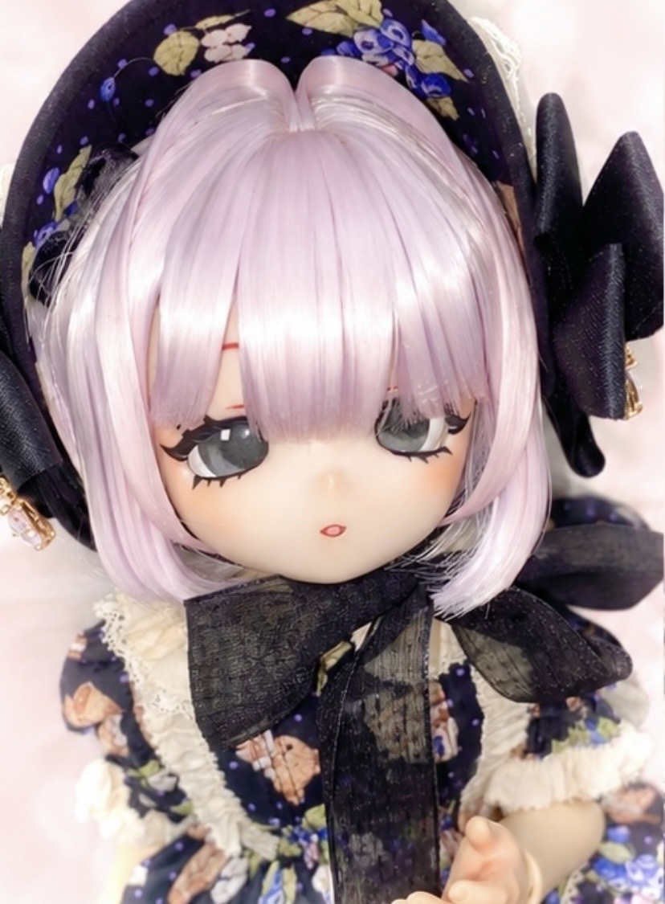
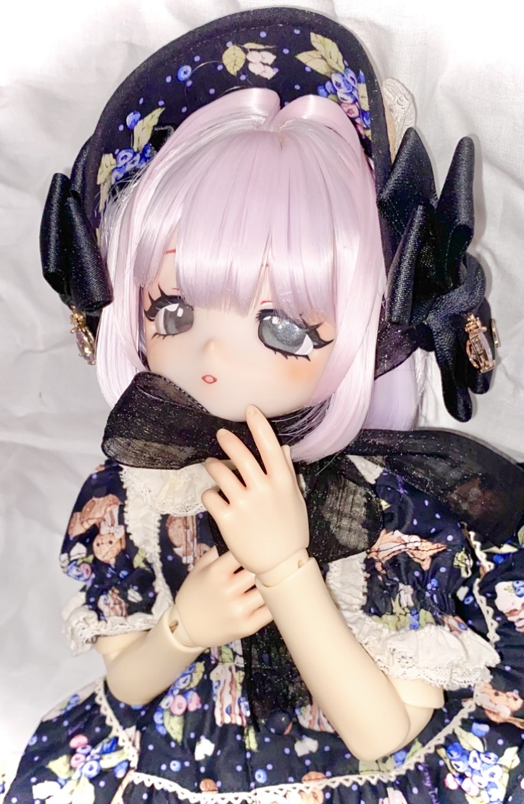
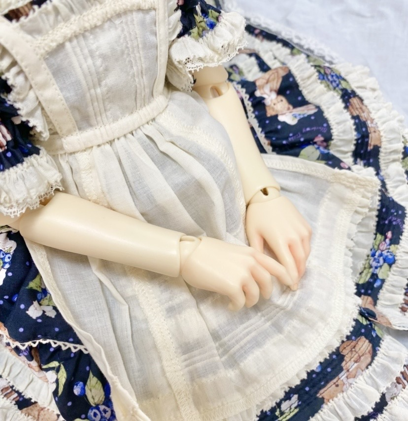
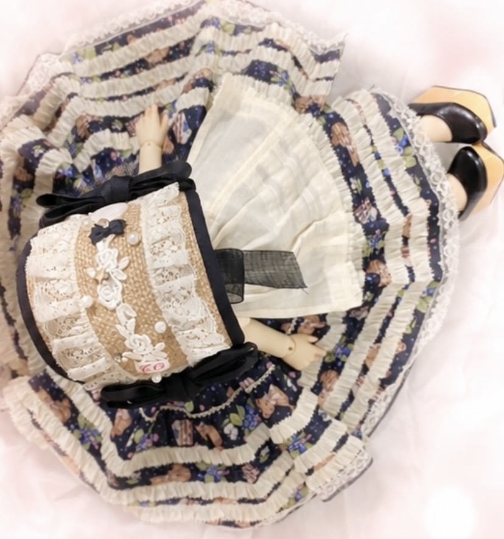
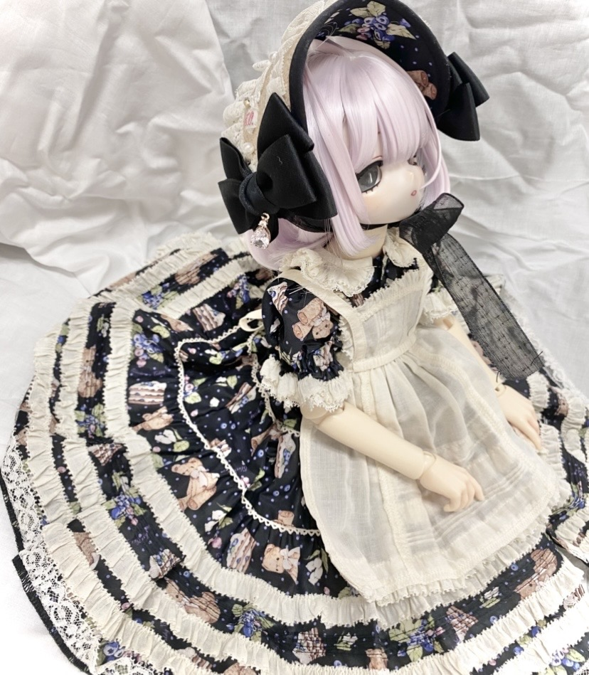
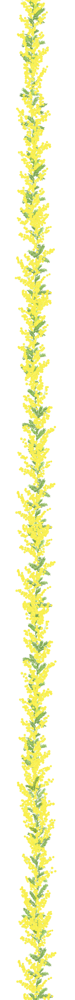

Face
大きく可愛らしい瞳が特徴的。
光が入りやすくハイライトが大きくなり、より一層可愛らしさが増します。アニメらしいさまざまな表情を楽しめます。
アニメ顔で大きな瞳が特徴のドール。
フィギュアとドール、双方の魅力を持ちます。独自のキャラクター表現も大きな魅力の一つです。

大きく可愛らしい瞳が特徴的。
光が入りやすくハイライトが大きくなり、より一層可愛らしさが増します。アニメらしいさまざまな表情を楽しめます。
関節の可動域が広く、自然なポーズで写真撮影ができます。
手や足、胸パーツを変えるとまた違った表情を見せてくれます。
アニメドールはカスタマイズが豊富な印象です。
顔パーツやボディパーツも簡単に付け替えができ、ドールアイも手描きで作ることができます。
